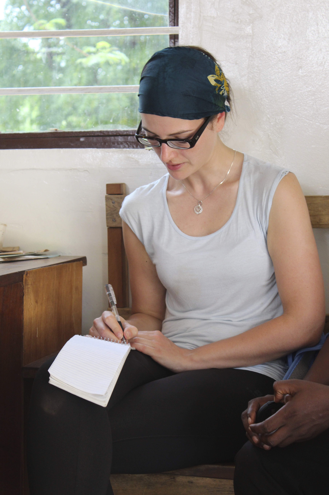
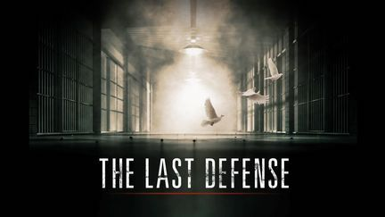
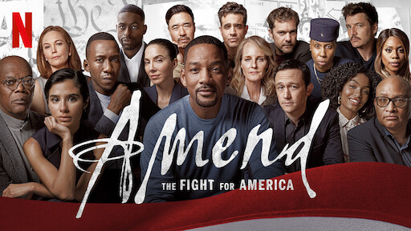
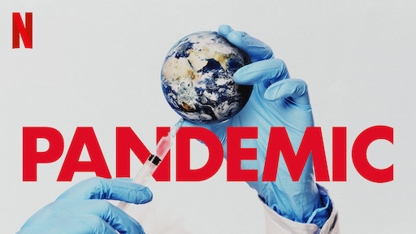
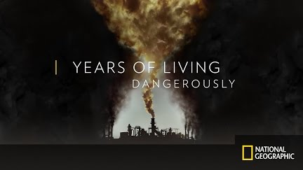
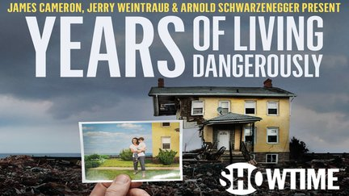
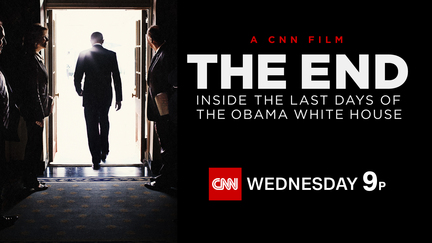
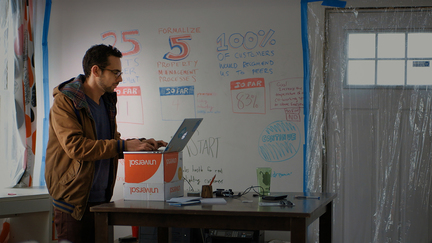
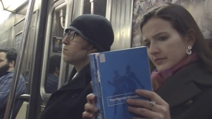

Lorena Galliot is a French-Venezuelan-American journalist and producer. Most recently, she put her native trilingualism to use crafting audio stories in French, Spanish and English for the podcast company Adonde Media and Duolingo.
Prior to working in audio, Lorena worked with some of New York City’s leading independent production companies, helping create documentaries on topics ranging from wrongful convictions to climate change to the 14th Amendment of the US Constitution. Projects she's worked on have aired on Netflix, ABC News, National Geographic, Showtime, and more. Before moving to New York in 2011, Lorena was a staff reporter for FRANCE 24.com in Paris.
In between productions, Lorena thinks a lot (and also writes) about issues surrounding sustainable development and renewable energy. Her written work has been published in The Christian Science Monitor, Scientific American, Grist, The Daily Climate and The New York Times.
When she’s not at her desk or out reporting, you can usually find her hanging out with her toddler, salsa dancing with her husband or munching on something chocolate. Deep down, everyday people’s lives and stories are what she cares about the most.
Selected Documentary Projects

The Last Defense
Producer
ABC News docu-series exploring flaws in the American justice system through in-depth examinations of two modern-day death row cases. Executive Produced by Viola Davis and Premiered at the 2018 Tribeca Film Festival.
Watch Trailer.

Amend
Co-Producer
A Netflix documentary event series with an all-star cast, Amend explores the evolving, ongoing fight for equal rights in America through the lens of the US Constitution’s 14th Amendment.
Watch Trailer.

Pandemic
Segment Producer
This prescient documentary series, shot before Covid-19 began its' deadly spread across the globe, follows six remarkable people on the front lines of medicine, science and public health fighting to prevent the next global outbreak.
Watch Trailer.

Years of Living Dangerously, Season 2
Co-Producer, Episodes 1 and 6
Second season of the Emmy award-winning documentary series on climate change, which premiered on Earth Day 2016 on National Geographic. Executive Producers include James Cameron and Arnold Schwarzenegger.
Watch Clips. Watch Trailer.

Years of Living Dangerously, Season 1
Associate Producer, Episodes 3 and 7
Emmy award-winning documentary series for Showtime reveals the emotional and hard-hitting effects of climate change across the planet.
Watch Full Episodes.

THE END: Inside the Last Days of the Obama White House
Story Producer
CNN Films special feature painting a candid and intimate portrait of the people working closest with the Obamas, with rare and exclusive access to key White House figures during the period after the 2016 election.
Watch Clips.

Generation Startup
Associate Producer
Documentary feature capturing the struggles and triumphs of six recent college graduates who put everything on the line to build startups in Detroit.
Watch Trailer.

The Hipster Hunt
Producer and Host
Short video produced with Julie Percha in 2012 for Columbia Journalism School’s Video Storytelling class. It was picked up by various online outlets and garnered over 165K views.
Watch video.
Selected Articles
Africa's Quiet Solar Revolution
Reporter and Writer
Feature magazine article reported with a Pulitzer Grant from Columbia University, and published as a cover story in the Christian Science Monitor.
Read.
The Latest French Fashion: Eating Ugly Fruit and Veggies
Reporter and Writer
Feature article for Grist.com.
Read.
New York Will Never Be Paris
Writer
Lighthearted opinion article for the New York Times' "Room for Debate" column. Read.
How to Learn? Early and Often.
Reporter and Writer
Feature article originally published in the “At Home Abroad” section of the International Herald Tribune. and re-published on the New York Times.com. Read.


{kind=link}
{kind=link}
{kind=link}